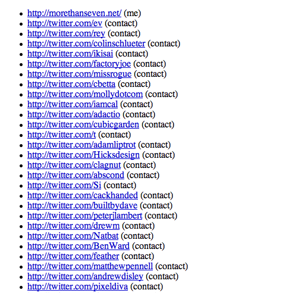

Javascript badges powered by JSONP and microformats
Introduction
With the number of social networking sites and other online applications increasing daily, I'm starting to get bored of entering and maintaining the same information on each new site I join, never mind my own personal sites. I'm sure some of you are feeling the same way too! Efforts like the DataPortability working group might be the solution in the long term; they are working on bringing together various existing technologies to provide a clear design for personal data portability between systems. But not all the pieces are in place just yet.
I've therefore started working on a solution which could make your lives easier in this respect. Using a bit of JavaScript, a nifty way of making remote web service calls (JSONP) and a few microformats, I can display information from one service somewhere else, leaving me with only one place to update it. In this article you're going to create a JavaScript badge that can be added to any site and which will display relationship data from a service which exposes it (Twitter, in this particular example.)
Microformats
Microformats are a set of simple, open data formats built upon existing and widely adopted standards. By adding classes and other attributes to your markup you can add semantics that allow meaningful data to be extracted from the data. Lots of sites are starting to make use of microformats. Twitter, for example, uses the XFN (XHTML Friends Network) microformat to markup the list of followers on its profile pages. And Upcoming uses the hCard and hCalendar formats to allow for easy export of the event data into calendars and address books.
XFN
The XFN microformat is a simple way to represent human relationships using hyperlinks. By using a set of agreed values for the rel attribute on a hyperlink you can indicate your relationship with others, when linking to their web sites. For instance, you can specify that the destination of a link belongs to you using rel="me", or specify that someone is a friend and a colleague using rel="friend met colleague" on a link to their site. For a much more thorough analysis of XFN, read Brian Suda's XFN encoding, extraction, and visualizations article.
Twitter uses a few microformats in the markup for the list of friends shown on each profile page, as shown below.
<span class="vcard">
<a href="http://twitter.com/BenWard" class="url" rel="contact" title="Ben Ward">
<img alt="Ben Ward" class="photo fn" height="24" id="profile-image" src="..." width="24" />
</a>
</span>This snippet is from my Twitter profile page. As well as marking Ben Ward as a contact of mine (via the XFN rel="contact" attribute) it also indicates Ben is called Ben Ward and owns the web page at twitter.com/BenWard, using the hCard microformat. You will be extracting this information from Twitter in the example below.
Parsing microformats
Parsing microformats can be a little complicated as they are purposely designed for people first and machines second. However you don’t have to do all the work yourself. In this example you’re going to be using the ufXtract microformats parser from Glenn Jones to extract the structured data from the markup. ufXtract can discern hCard, XFN, hReview, hCalendar and a whole host of other microformats, and output the results in XML, plain text or JSON.
ufXtract can be used as a simple webservice over HTTP. All you have to do is construct a valid URL to pass the relevant arguments to the parser and it will return the results. For instance, the following URL will parse my Twitter profile at twitter.com/garethr for hCard data and return it as JSON:
http://ufxtract.com/api/?url=http://twitter.com/garethr?format=hcard&output=jsonJSONP
A typical way of making a request to the server from JavaScript is to use the XMLHTTPRequest object, but this approach does not currently allow for cross-domain requests. If you controlled both the servers you could always build a proxy to proxy request through to a remote host, but what about third party sites? For this badge you want your site on one domain to talk to one on another so you need another solution.
The solution is JSONP or Remote JSON. The idea is based around the ability of JavaScript to add a new script element to the head of the document at any time and for that script element to point to a remote domain. The remote domain returns a chunk of JSON wrapped in a function call so when the script content loads, a callback function is called with the JSON response passed as a parameter. This approach relies on the third party service supporting the wrapping of the returned JSON in a user specified function call, but luckily for us ufXtract supports JavaScript callbacks.
The Markup
Before you look at the script that will build the badge, I'll get you to add some markup into a fresh HTML page, which will be replaced by the list of friends. The only input the script needs is a URL to search for microformats on. You’ll use an id to trigger the badge script. First of all, create a new HTML document and add the following to it, then save it:
<!DOCTYPE html PUBLIC "-//W3C//DTD XHTML 1.0 Strict//EN"
"http://www.w3.org/TR/xhtml1/DTD/xhtml1-strict.dtd">
<html xmlns="http://www.w3.org/1999/xhtml" xml:lang="en" lang="en">
<head>
<meta http-equiv="Content-type" content="text/html; charset=utf-8">
<title>JSONP Example</title>
</head>
<body>
<div id="ufbadge">
<a href="http://twitter.com/garethr">Gareth Rushgrove on twitter</a>
</div>
</body>
</html>This markup also provides a reasonable fallback for those without JavaScript - a link to the same information.
You don’t have to point the script at Twitter either. Any page containing XFN data will work. For example, you could try:
<div id="ufbadge">
<a href="http://ben-ward.co.uk">Ben Ward</a>
</div>The JavaScript
Now you have the markup in place you can get on and write the JavaScript. The basic workflow of the script is as follows:
- Find the element with an
idof ufbadge. - Read the
hrefvalue of the containing link. - Insert a
scriptelement into theheadof the document - this loads the JSONP from ufXtract, passing thehrefvalue from above as part of the argument. - When ufXtract calls back, parse the returned JSON and build an unordered list.
- When the end of the JSON is reached, add it to the page as a list.
The following script uses the YUI (Yahoo User Interface) library to deal with loading the script after the DOM has loaded. Apart from that it’s pure JavaScript, so you could use this with your framework of choice by simply replacing the loading method. Include the YUI event module in the head of the document you created above as follows:
<script type="text/javascript" src="http://yui.yahooapis.com/2.4.1/build/yahoo/yahoo-min.js" ></script>
<script type="text/javascript" src="http://yui.yahooapis.com/2.4.1/build/event/event-min.js" ></script>The Code
Let's get started with the actual JavaScript code. As stated above, the first thing you need to do is get hold of the badge element and its containing link. Best practices would dictate placing this code in an external script but for the moment I'll get you to add it to the head of the above document, to simplify the example. I'll just highlight the key parts of the code as we go but if you're following along with the example then the full script can be found at the end of the article. You can find a working version of the example here. Add the above script import elements inside the head of your document, and then add the following lines inside another script element below them.
var badge = document.getElementById('ufbadge');
var link = badge.getElementsByTagName('a')[0];Now you have the DOM element you wish to parse, namely link.href, you can make a request to ufXtract as follows. You’ll be making extensive usage of the DOM. If you’re not too familiar or just want a refresher on the DOM then W3Schools has a good HTML DOM Tutorial. Add the following inside the bottom script element, just before the closing tag.
var head = document.getElementsByTagName('head');
var script = document.createElement('script');
script.type = "text/javascript";
script.src = "http://lab.backnetwork.com/ufXtract/?url=" + escape(link.href) + "&format=xfn&output=json&callback=build";
head[0].appendChild(script);Note the use of the escape function to escape the value of link.href - this is because the web service expects a well-formed URL. Note also the callback parameter, which will trigger our next function.
The next part is triggered when the code you added above has loaded fully. This part loops through the XFN data returned (response.xfn) and creates a list of links along with the relationship data. Again, add this just before the closing tag of your bottom script element.
function build(response) {
var ul = document.createElement('ul');
ul.id = "ufbadge";
for (j in response.xfn) {
var li = document.createElement('li');
li.className = response.xfn[j].rel;
var a = document.createElement('a');
a.href= response.xfn[j].link;
var txt = document.createTextNode(response.xfn[j].link);
var span = document.createElement('span');
var rel = document.createTextNode(' (' + response.xfn[j].rel + ')');
a.appendChild(txt);
span.appendChild(rel);
li.appendChild(a);
li.appendChild(span);
ul.appendChild(li);
}
}That's pretty much it! Try your example out, and you should get something like the image seen in Figure 1.
Done! My Twitter XFN data has been imported into the example page
The Complete Script
The complete script wraps the basic code above into an object, adds a little bit of error checking and displays a loading message for good measure. You can see the finished script in action here.
var Badge = function() {
var obj;
return({
init: function() {
var badge = document.getElementById('ufbadge');
if (badge) {
var link = badge.getElementsByTagName('a')[0];
if (link) {
badge.innerHTML = "loading relationships for " + link.childNodes[0].nodeValue;
var head = document.getElementsByTagName('head');
var script = document.createElement('script');
script.type = "text/javascript";
Badge.obj = badge;
script.src = "http://lab.backnetwork.com/ufXtract/?url=" + escape(link.href) + "&format=xfn&output=json&callback=Badge.build";
head[0].appendChild(script);
}
}
},
build: function(response) {
var ul = document.createElement('ul');
ul.id = "ufbadge";
for (j in response.xfn) {
var li = document.createElement('li');
li.className = response.xfn[j].rel;
var a = document.createElement('a');
a.href= response.xfn[j].link;
var txt = document.createTextNode(response.xfn[j].link);
var span = document.createElement('span');
var rel = document.createTextNode(' (' + response.xfn[j].rel + ')');
a.appendChild(txt);
span.appendChild(rel);
li.appendChild(a);
li.appendChild(span);
ul.appendChild(li);
}
this.obj.parentNode.replaceChild(ul,this.obj);
}
});
YAHOO.util.Event.onDOMReady(Badge.init);Conclusion
The above script extracts XFN data but it would be possible to extend it to display other microformats as well. The idea is simply that you can manage your content in one place and then display it in several other places around the web using a JavaScript badge. In many cases this type of work is best done on the server, but for occasions when you only control the client or where you don't have access to server-side processing, JavaScript and JSONP can be invaluable.
JSONP is a simple but powerful pattern for all kinds of client-side applications that utilise external APIs. You can get started using ufXtract or other supporting web services now. And if you’re building a service in the future think about adding the ability to specify a JavaScript callback as part of your API.
This article is licensed under a Creative Commons Attribution, Non Commercial - Share Alike 2.5 license.
Comments
The forum archive of this article is still available on My Opera.
No new comments accepted.